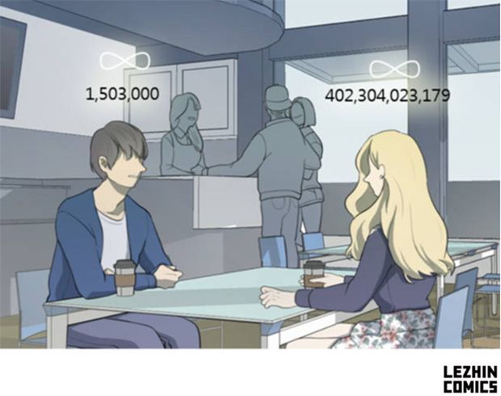

대중문화는 현재를 사는 우리들의 이야기다.
그 중에서도 웹툰은 요즘 사람들에게 익숙한 디지털 디바이스인 스마트폰을 통해 주로 전달되면서도, 드라마나 예능 등 쉴 틈 없이 연속적으로 진행되는 콘텐츠와 다르다. 감상할 때 차분히 생각을 정리하거나 자신을 되돌아볼 수 있는 여백의 미학을 갖고 있다.
이런 공감과 반추의 매력 때문에, 정서적 위안과 위로를 원하는 이들이 웹툰을 많이 찾고 있다. 이에 지디넷코리아는 레진코믹스와 함께 지친 일상을 잠시 잊을 수 있는 다양한 웹툰 속 이야기를 소개하고자 한다.
레진코믹스 미스터리 로맨스 웹툰 ‘너의 돈이 보여’(작가 S리아, 민국23)는 다른 사람이 미래에 갖게 될 재산을 내다볼 수 있는 초능력을 가진 두 남녀의 사랑 이야기를 그린 작품이다.
남자주인공 성춘에게는 타인의 현재자산과 미래자산을 볼 수 있는 능력이 있다. 성춘은 자신의 초능력으로 부자인 여자를 만나 남은 인생을 편하게 살고 싶어 하던 차, 현재자산 4천억원, 미래자산 측정불가인 여자(지향)와 우연히 마주친다. 성춘은 지향의 재력에 빠져 자신의 초능력을 숨기고 의도적으로 접근한다.
한편 성춘처럼 자산을 볼 수 있는 능력을 가진 여자주인공 지향은 성춘과는 다른 이유로 그와 마주한다. 지향의 눈에 보인 성춘의 현재자산은 150만원. 헌데 성춘의 미래자산이 무한대다. 재벌인 아버지에게서 마저 볼 수 없었던 무한대 자산. 지향은 어떻게 현재자산 150만원인 남자가 미래에 무한대의 자산을 갖게 되는지 호기심이 발동해 성춘의 헌팅에 응하게 된다.
웹툰 너의 돈이 보여는 돈 많은 여자를 만나려는 남자와 자신의 돈 때문에 위축되거나 접근하는 남자를 증오하는 여자의 동상이몽 로맨스다.
성춘은 돈을 보고 지향에게 접근했지만 그녀를 진심으로 사랑하기 시작해 시작점을 되돌리려 애쓰고, 지향은 성춘의 의도된 접근을 알게 돼 성춘 역시 평소 자신이 싫어하는 부류의 사람이었다는 생각에 상처받고 그에게 향하던 마음을 굳게 닫는다.
성춘과 지향의 갈등이 고조되면서 과연 이 둘의 미래는 어떻게 될지, 도입부에서 보여줬던 이들의 무한대 미래자산은 어떤 의미인지 궁금증을 갖게한다.
그런데 이즈음 다른 사람의 현재자산과 미래자산을 볼 수 있다는 설정이 비현실적인지, 경제적 불안정으로 연애를 멈추고 결혼과 출산을 뒤로 하는 세상에서 그래도 돈보다 사랑이 먼저라는 믿음이 비현실적인지 문득 생각하게 된다.
그러다 다시 바라게 되는 건 '그럼에도 불구하고'가 아닐까. 살기 팍팍해 경제적 안정을 우선한다 하더라도, 사랑보다 돈이 더 중요하다는 결말을 자연스럽게 받아들이는 세상을 원하는 건 아니기 때문이다.
그래서 웹툰 너의 돈이 보여의 또 다른 이름은 '그럼에도 너의 사랑이 보여'일지도 모르겠다.
다른 사람의 자산을 내다볼 수 있는 두 남녀의 사랑이야기를 그린 '너의 돈이 보여'는 총 81화로 완결돼 서비스 중이다. 이 웹툰은 tvN 미니시리즈 '치즈인더트랩'을 만든 제작사 에이트웍스와 영상화 판권계약을 맺고 드라마로 제작될 예정이다.[☞바로보기: 레진코믹스 웹툰 '너의 돈이 보여']
백봉삼 기자 | paikshow@zdnet.co.kr
기사원본